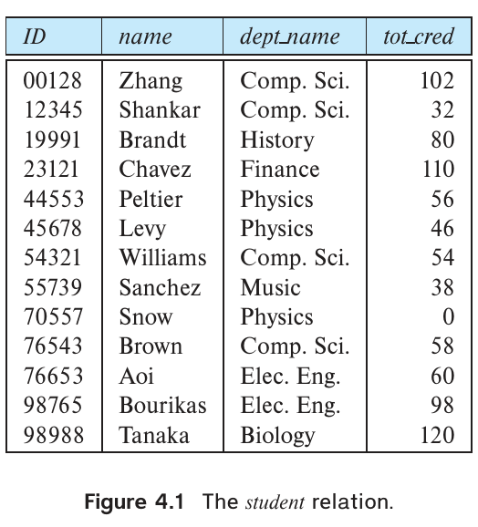
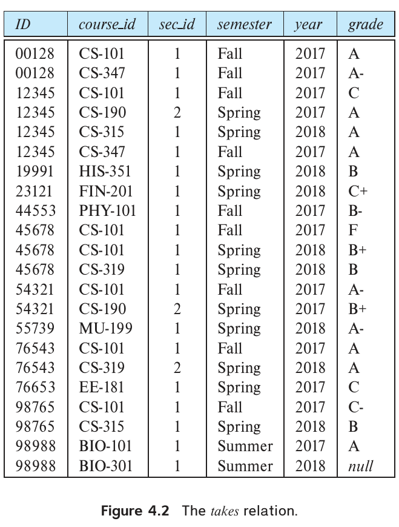
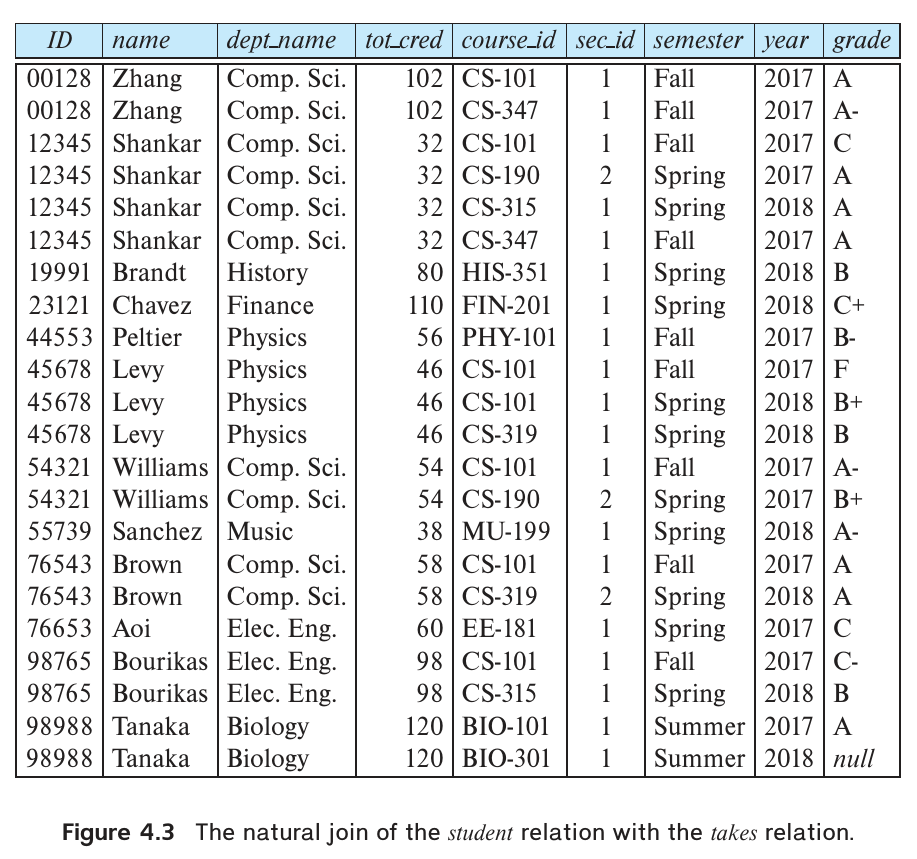
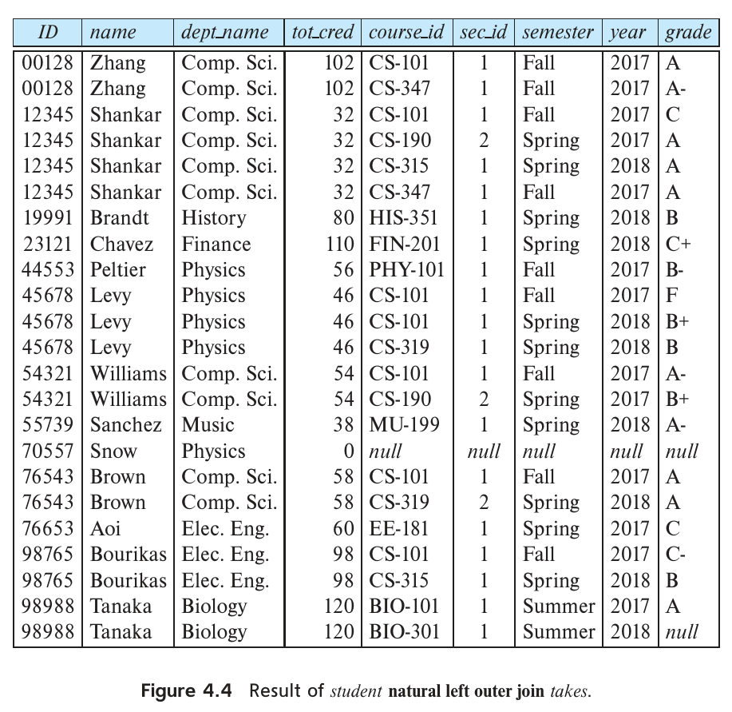
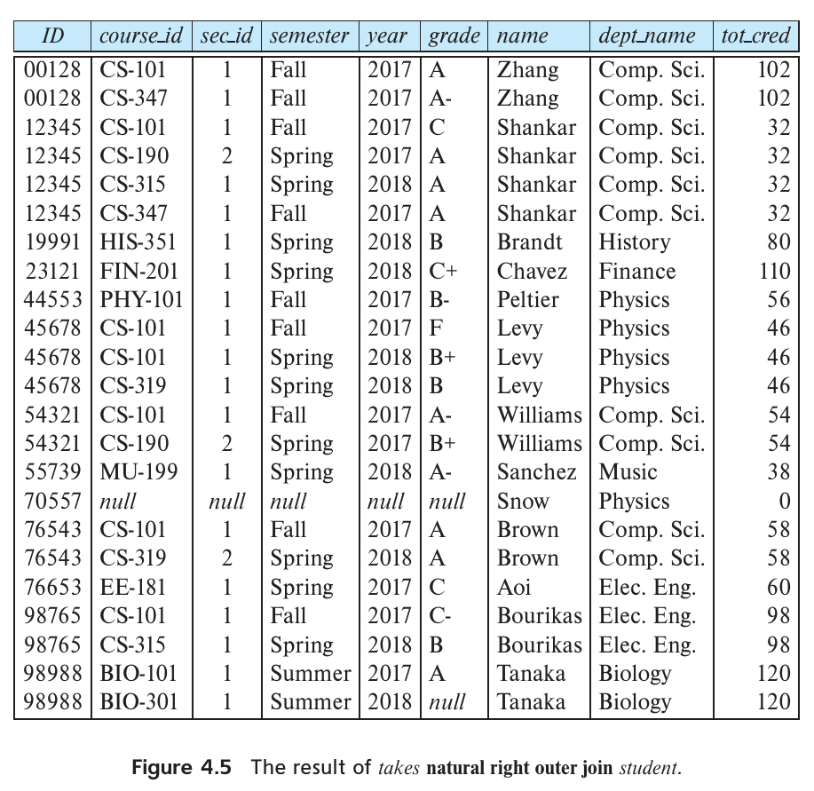
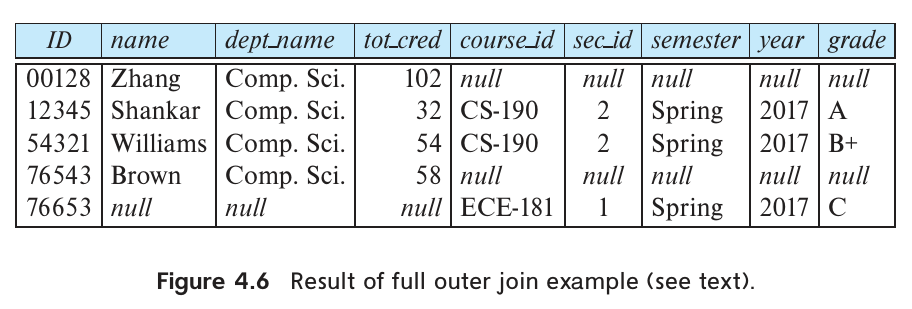
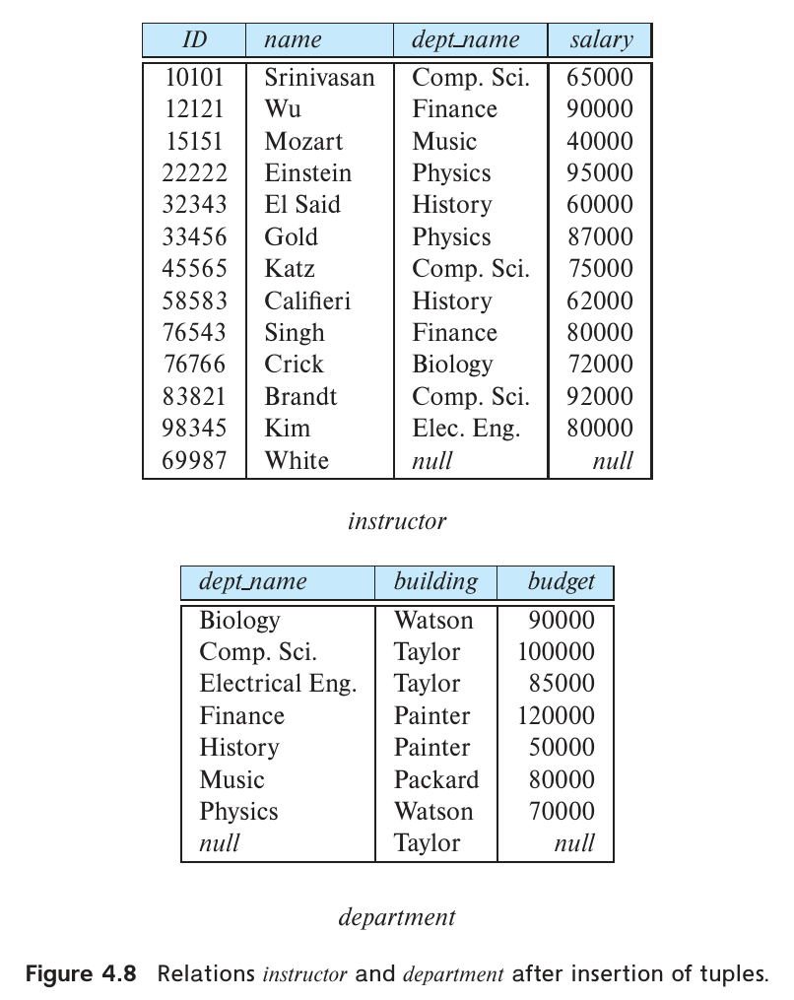
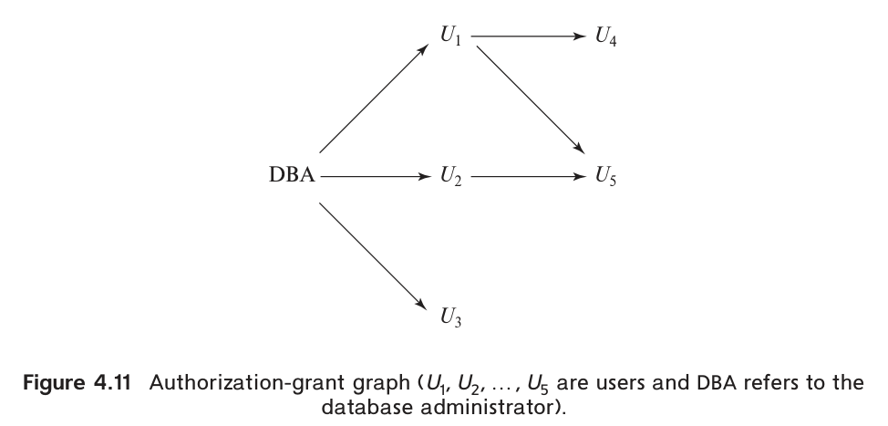
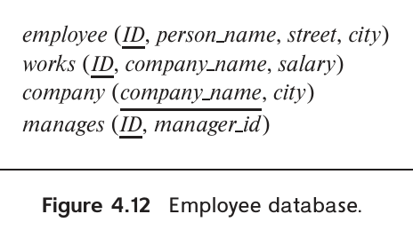

第4章 中级 SQL

本章继续介绍 SQL，内容包括更复杂的查询形式、视图定义、事务、完整性约束、SQL 数据定义的更多细节，以及授权。
4.1 连接表达式
第 3 章的示例查询除了集合运算，都用笛卡儿积组合多个关系中的信息。本节介绍几种连接运算，使程序员能够更自然地表达某些查询，也能表达仅用笛卡儿积很难完成的查询。

图 4.1 student 关系。
图中字段：ID：学生号；name：姓名；dept_name：系名；tot_cred：已获学分。

图 4.2 takes 关系。
图中字段：ID：学生号；course_id：课程号；sec_id：教学班号；semester：学期；year：年份；grade：成绩。
本节的例子都涉及图 4.1 的 student 和图 4.2 的 takes。注意，ID 为 98988 的学生在 2018 年夏季选修的 BIO-301 课程 1 号教学班，其 grade 为空值，表示成绩尚未给出。
4.1.1 自然连接
下面的 SQL 查询计算每位学生选修过的课程集合：
select name, course_id
from student, takes
where student.ID = takes.ID;
这个查询只输出选修过课程的学生，没有选修任何课程的学生不会出现在结果中。
student 和 takes 的匹配条件要求 student.ID 等于 takes.ID，而 ID 恰好是两者唯一的同名属性。这种情况很常见：from 中关系的匹配条件通常要求所有同名属性的值都相等。
为了方便 SQL 程序员处理这种常见情况，SQL 支持下面介绍的自然连接。SQL 还提供了其他几种连接两个或多个关系中信息的方法。前面已介绍通过笛卡儿积配合 where 谓词进行连接，4.1.2 至 4.1.4 节将讨论其他方法。
自然连接（natural join）以两个关系为输入，产生一个关系。笛卡儿积将第一个关系的每个元组与第二个关系的每个元组拼接；自然连接只考虑在双方模式的同名属性上取值相同的元组对。例如：
student natural join takes
只考虑 student 元组与 takes 元组在公共属性 ID 上取值相同的组合。
结果如图 4.3 所示，只有 22 个元组，每个都包含学生及其实际选修课程的信息。两种模式共有的属性在结果中只出现一次。属性的排列顺序为：先列出两者共有的属性，再列出只属于第一个关系的属性，最后列出只属于第二个关系的属性。

图 4.3 student 与 takes 的自然连接。
图中字段：ID：学生号；name：姓名；dept_name：系名；tot_cred：已获学分；course_id：课程号；sec_id：教学班号；semester：学期；year：年份；grade：成绩。
前面将“找出大学中选修过课程的所有学生姓名及其所选全部课程的课程号”写为：
select name, course_id
from student, takes
where student.ID = takes.ID;
使用自然连接可以简写为：
select name, course_id
from student natural join takes;
两个查询产生相同的结果。1
自然连接的结果是一个关系。从概念上说，from 中的 student natural join takes 被替换为计算自然连接得到的关系，然后像 3.3.2 节那样，在该关系上计算 where 和 select。2
SQL 查询的 from 可以通过自然连接组合多个关系：
select A1, A2, …, An
from r1 natural join r2 natural join ... natural join rm
where P;
更一般地，from 可以具有以下形式：
from E1, E2, ..., En
其中每个 Eᵢ 都可以是单个关系，也可以是包含自然连接的表达式。例如，“列出学生姓名及其选修课程的名称”，可写为：
select name, title
from student natural join takes, course
where takes.course_id = course.course_id;
先计算 student 与 takes 的自然连接，再将结果与 course 做笛卡儿积。where 只保留连接结果中的课程号与 course 中课程号相等的元组。这里 takes.course_id 引用的是自然连接结果中的 course_id 字段，因为这个字段来自 takes。
下面的 SQL 查询却不会得到相同结果：
select name, title
from student natural join takes natural join course;
原因在于，student 与 takes 的自然连接包含属性 (ID, name, dept_name, tot_cred, course_id, sec_id)，而 course 包含 (course_id, title, dept_name, credits)。自然连接除了要求 course_id 相同，还会要求两个关系的 dept_name 相同。这样就会遗漏所有学生跨系选课的“学生姓名、课程名称”组合，而前一个查询能够正确输出这些组合。
译注：原文此处列出的自然连接属性还遗漏了 semester、year 和 grade；图 4.3 展示了完整属性。这不影响此处关于 dept_name 误匹配的分析。
为了保留自然连接的便利，同时避免错误地要求某些同名属性相等，SQL 提供了一种可明确指定等值列的连接形式：
select name, title
from (student natural join takes) join course using (course_id);
join … using 要求给出属性名列表，参与连接的两个关系必须都有这些属性。以 r1 join r2 using(A1, A2) 为例，它与 r1 natural join r2 类似，但 r₁ 中的 t₁ 与 r₂ 中的 t₂ 只需满足 t₁.A₁ = t₂.A₁ 且 t₁.A₂ = t₂.A₂ 即可匹配。即使两个关系还都有名为 A₃ 的属性，也不要求 t₁.A₃ = t₂.A₃。
因此，上面的 SQL 允许 student.dept_name 与 course.dept_name 不同，能够得到正确答案。
4.1.2 连接条件
4.1.1 节介绍了自然连接，以及只要求指定属性匹配的 join … using。SQL 还支持另一种连接形式，可以指定任意连接条件。
on 条件允许对参与连接的关系指定一般谓词。写法与 where 谓词一样，只是用关键字 on。与 using 一样，on 条件位于连接表达式末尾。例如：
select *
from student join takes on student.ID = takes.ID;
这里的 on 指定：student 和 takes 元组在 ID 相等时匹配。这与 student natural join takes 几乎相同，因为自然连接也要求 ID 相等。区别在于结果列出两份 ID，分别来自 student 和 takes，即使二者的值一定相同。
事实上，这个查询等价于：
select *
from student, takes
where student.ID = takes.ID;
如前所述，用关系名消除属性名 ID 的歧义，两份属性分别为 student.ID 和 takes.ID。要只显示一次 ID，可写为：
select student.ID as ID, name, dept_name, tot_cred,
course_id, sec_id, semester, year, grade
from student join takes on student.ID = takes.ID;
结果与图 4.3 的 student 和 takes 自然连接完全相同。
on 可以表达任何 SQL 谓词，因而能表达比自然连接更丰富的连接条件。不过，正如前面的例子所示，可以把 on 中的谓词移到 where，将这样的连接改写为不含 on 的等价表达式。这样看来，on 似乎是 SQL 中的冗余功能。
引入 on 有两个理由。首先，稍后介绍的外连接中，on 与 where 的行为不同。其次，把连接条件放在 on 中，其余条件放在 where 中，通常更便于阅读。
4.1.3 外连接
假设要列出所有学生的 ID、姓名、系名、总学分，以及他们选修的课程。下面的 SQL 看起来似乎可以得到所需信息：
select *
from student natural join takes;
实际上，它未能完全满足要求。若某个学生没有选修课程，他在 student 中的元组就无法与 takes 的任何元组满足自然连接条件，因而不会出现在结果中。这样便看不到未选课学生的信息。例如，图 4.1、4.2 中 ID 为 70557 的 Snow 没有选修任何课程。Snow 出现在 student 中，但其 ID 没有出现在 takes 的 ID 列中，因此自然连接结果不包含 Snow。
更一般地，参与连接的一个或两个关系中的某些元组，可能以这种方式“丢失”。外连接（outer join）的行为与前面的连接类似，但它会生成带有空值的结果元组，保留那些原本会丢失的元组。
例如，为了让 Snow 出现在结果中，可以向连接结果添加一个元组：来自 student 的属性都使用 Snow 的对应值，其余来自 takes 的属性，即 course_id、sec_id、semester、year，设为空值。这样，Snow 的元组就保留在外连接结果中了。
译注：原文列举待补空值的属性时遗漏了 grade；grade 也需要设为 null，见图 4.4。
外连接有三种形式：
- 左外连接（left outer join）：保留左侧关系，即写在
left outer join之前的关系中的元组。 - 右外连接（right outer join）：保留右侧关系，即写在
right outer join之后的关系中的元组。 - 全外连接（full outer join）：保留两个关系中的元组。
前面介绍的那些不保留未匹配元组的连接称为内连接（inner join），以区别于外连接。
下面具体说明各种外连接的计算。左外连接先按前述方式计算内连接，然后对左侧关系中未与右侧任何元组匹配的每个元组 t，向结果添加一个元组 r：
- r 中来自左侧关系的属性，使用 t 中对应的值。
- r 中其余属性设为空值。
图 4.4 是下面查询的结果：
select *
from student natural left outer join takes;
这个结果包含 Snow（ID 为 70557），而内连接没有。Snow 元组中只属于 takes 模式的属性均为空。3

图 4.4 student 与 takes 的自然左外连接。
图中字段：ID：学生号；name：姓名；dept_name：系名；tot_cred：已获学分；course_id：课程号；sec_id：教学班号；semester：学期；year：年份；grade：成绩。
外连接的另一个用途是查询“找出没有选修任何课程的所有学生”：
select ID
from student natural left outer join takes
where course_id is null;
右外连接与左外连接对称。右侧关系中未与左侧任何元组匹配的元组，会补上空值后加入右外连接结果。因此，交换两侧关系并改用右外连接：
select *
from takes natural right outer join student;
除结果中的属性顺序不同外，得到的结果相同（见图 4.5）。

图 4.5 takes 与 student 的自然右外连接。
图中字段：ID：学生号；name：姓名；dept_name：系名；tot_cred：已获学分；course_id：课程号；sec_id：教学班号；semester：学期；year：年份；grade：成绩。
全外连接结合了左外连接和右外连接。计算内连接之后，将左侧未与右侧任何元组匹配的元组补上空值，加入结果；同样，把右侧未与左侧任何元组匹配的元组补上空值，也加入结果。换言之，全外连接是左外连接与对应右外连接的并。4
例如：“列出计算机科学系的全部学生，以及他们在 2017 年春季选修的教学班（如果选修过）；2017 年春季的所有教学班都要显示，即使没有计算机科学系的学生选修。”这个查询可写为：
select *
from (select *
from student
where dept_name = 'Comp. Sci.')
natural full outer join
(select *
from takes
where semester = 'Spring' and year = 2017);
结果见图 4.6。
译注：此查询的右侧来自 takes，只能保留该表中实际存在的选课记录，不能列出完全无人选修的教学班。原文所说“所有教学班”须在这个范围内理解。图 4.6 最后一行的 ECE-181 与图 4.2 的 EE-181 不一致，原图照录。

图 4.6 全外连接示例的结果。
图中字段：ID：学生号；name：姓名；dept_name：系名；tot_cred：已获学分；course_id：课程号；sec_id：教学班号；semester：学期；year：年份；grade：成绩。
外连接也可以使用 on。下面的查询与最初使用 student natural left outer join takes 的查询相同，只是结果中 ID 出现两次。
select *
from student left outer join takes on student.ID = takes.ID;
如前所述，在外连接中，on 与 where 的行为不同。外连接只为未参与对应内连接结果的元组添加补空值的元组。on 是外连接定义的一部分，where 则位于连接之外。Snow（ID 为 70557）的例子可以说明这个区别。把前一查询的 on 谓词移入 where，并将 on 条件改为 true：5
select *
from student left outer join takes on true
where student.ID = takes.ID;
前一个带等值 on 条件的左外连接查询包含元组 (70557, Snow, Physics, 0, null, null, null, null, null, null)，因为 takes 中没有 ID 为 70557 的元组。后一个查询中，每对元组都满足连接条件 true，外连接不会生成补空值的元组，实际上得到两个关系的笛卡儿积。由于 takes 中没有 ID 为 70557 的元组，每个姓名为 Snow 的结果元组，其 student.ID 和 takes.ID 都不同，因而被 where 删除。Snow 最终不会出现在后一个查询的结果中。
注 4.1 SQL 与多重集关系代数：第四部分
关系代数支持左外连接 ⟕θ、右外连接 ⟖θ 和全外连接 ⟗θ，也支持自然连接 ⋈，以及左、右、全外连接的自然连接版本，分别记为 ⟕、⟖、⟗。这些运算的定义与 4.1 节介绍的对应 SQL 运算相同。
4.1.4 连接类型和条件
SQL 把普通连接称为内连接，以区别于外连接。可以在连接子句中使用 inner join 指定普通连接。关键字 inner 是可选的：没有 outer 前缀时，默认就是内连接。因此：
select *
from student join takes using (ID);
等价于：
select *
from student inner join takes using (ID);
同样，natural join 等价于 natural inner join。
图 4.7 列出前面介绍的全部连接类型。任一种连接类型（内连接、左外连接、右外连接、全外连接）都可以与任一种连接条件（natural、using、on）组合。
| 连接类型 | 连接条件 |
|---|---|
inner join（内连接） |
natural |
left outer join（左外连接） |
on <predicate> |
right outer join（右外连接） |
using (A1, A2, …, An) |
full outer join（全外连接） |
图 4.7 连接类型与连接条件。两列分别列举可选项，左右同一行不表示固定配对。
4.2 视图
并非总希望所有用户都能看到数据库中的全部关系。4.7 节会介绍如何用 SQL 授权机制限制关系访问，但出于安全考虑，有时只需要向某个用户隐藏关系中的部分数据。例如，一名办事员需要知道教师的 ID、姓名和系名，却无权查看工资。他应该看到下面这个 SQL 所描述的关系：
select ID, name, dept_name
from instructor;
除安全需要外，也可能希望创建一组适合某个用户的“虚拟”关系，使它更符合该用户对机构结构的理解。在大学示例中，可以列出物理系在 2017 年秋季开设的全部教学班，以及各班所在的楼宇和房间号。为此需要的关系为：
select course.course_id, sec_id, building, room_number
from course, section
where course.course_id = section.course_id
and course.dept_name = 'Physics'
and section.semester = 'Fall'
and section.year = 2017;
可以计算并存储这些查询的结果，再把存储的关系提供给用户。但如果底层的 instructor、course 或 section 数据改变，存下来的结果就不再等于重新执行查询所得的结果。通常不宜这样计算并保存查询结果，不过也有例外，稍后会介绍。
SQL 允许用查询定义一个“虚拟关系”，从概念上说，其中包含查询结果。这个关系通常在使用时通过执行查询计算出来，无须预先计算并保存。3.8.6 节的 with 已提供类似功能：为子查询赋予名称，以便在某一个查询中反复使用。现在通过定义视图（view），把这个概念扩展到单个查询之外。在一组实际关系之上，可以定义许多视图。
4.2.1 视图定义
SQL 用 create view 定义视图。必须给出视图名称，以及计算视图的查询。命令形式为：
create view v as <query expression>;
其中 <query expression> 是任意合法查询表达式，v 为视图名。
再看需要访问 instructor 中除工资外全部数据的办事员。不应授予他访问 instructor 的权限（4.7 节介绍如何指定授权），可以把视图 faculty 提供给他：
create view faculty as
select ID, name, dept_name
from instructor;
如前所述，从概念上说，视图关系包含查询结果中的元组，但系统通常保存视图所对应的查询表达式。每次访问视图时，通过计算查询结果产生元组，即按需生成视图关系。
要创建一个视图，列出物理系在 2017 年秋季开设的全部教学班及其楼宇、房间号，可以写为：
create view physics_fall_2017 as
select course.course_id, sec_id, building, room_number
from course, section
where course.course_id = section.course_id
and course.dept_name = 'Physics'
and section.semester = 'Fall'
and section.year = 2017;
4.7 节讨论 SQL 授权机制时，会说明如何只授予用户访问视图的权限，也可以同时授予访问视图与关系的权限。
视图与 with 的区别是：创建后会一直可用，直到显式删除。with 定义的命名子查询只在定义它的查询内部有效。
4.2.2 在 SQL 查询中使用视图
定义视图之后，可以用视图名引用它生成的虚拟关系。例如，使用 physics_fall_2017 找出 2017 年秋季在 Watson 楼开设的全部物理系课程：
select course_id
from physics_fall_2017
where building = 'Watson';
查询中凡是可以出现关系名的位置，都可以出现视图名。
还可以显式指定视图属性的名称：
create view departments_total_salary(dept_name, total_salary) as
select dept_name, sum (salary)
from instructor
group by dept_name;
该视图给出每个系全体教师的工资总额。由于表达式 sum(salary) 没有名称，视图定义中显式给出了属性名。
直观上，任一时刻视图中的元组集合，都应是定义该视图的查询表达式在当时的求值结果。若计算并保存视图，底层关系修改后，保存的内容可能过期。为避免这一问题，通常采用以下实现：定义视图时，数据库系统保存视图的定义；查询中出现视图关系时，将其替换为保存的查询表达式。这样，每次计算查询时都会重新计算视图关系。
定义一个视图的表达式中可以使用另一个视图。例如，定义 physics_fall_2017_watson，列出 2017 年秋季在 Watson 楼开设的全部物理系课程的课程号和房间号：
create view physics_fall_2017_watson as
select course_id, room_number
from physics_fall_2017
where building = 'Watson';
其中 physics_fall_2017_watson 本身也是一个视图关系。它等价于：
create view physics_fall_2017_watson as
select course_id, room_number
from (select course.course_id, building, room_number
from course, section
where course.course_id = section.course_id
and course.dept_name = 'Physics'
and section.semester = 'Fall'
and section.year = 2017)
where building = 'Watson';
4.2.3 物化视图
某些数据库系统允许存储视图关系，同时确保定义视图所用的实际关系发生变化时，视图也保持更新。这类视图称为物化视图（materialized view）。
例如，将 departments_total_salary 物化后，结果就存储在数据库中。使用该视图的查询可以直接利用预先计算好的结果，执行速度可能大幅提高。
不过，若向 instructor 插入或删除教师元组，视图定义查询的结果就会改变，物化视图也必须更新。同样，修改某位教师的工资时，必须更新 departments_total_salary 中该教师所在系的元组。
保持物化视图内容最新的过程称为物化视图维护（materialized view maintenance），通常简称视图维护，16.5 节会介绍。只要定义视图所依赖的任一关系更新，就可以立即维护视图；一些数据库则采用延迟维护，在访问视图时才更新。还有些系统只定期更新物化视图，这样使用时内容可能已经过期，应用若要求最新数据，就不应使用这样的视图。一些数据库允许管理员为每个物化视图选择上述维护方式。
频繁使用某个视图的应用可能从物化中受益。某些查询需要对大关系计算聚集，同时又要求快速响应，创建对应的物化视图也可能显著改善性能。这时聚集结果通常远小于底层大关系，可以快速利用物化视图回答查询，避免读取大关系。应权衡物化对查询的收益、存储成本，以及更新增加的开销。
SQL 没有定义指定视图物化的标准语法，但许多数据库提供各自的扩展。一些系统会在底层关系变化时始终保持物化视图最新，另一些允许暂时过期，并定期重新计算。
4.2.4 视图更新
视图方便查询，但通过它表达更新、插入或删除，会遇到严重问题。困难在于，基于视图提出的数据库修改，必须转换为对数据库逻辑模型中实际关系的修改。
假设向办事员提供了前面的 faculty 视图。因为任何允许关系名的位置都可以使用视图名，他可以写：
insert into faculty
values ('30765', 'Green', 'Music');
这个插入必须转为对 instructor 的插入，因为 faculty 正是由这个实际关系构造的。但插入 instructor 元组时，还需要 salary 的值。可以合理地采用两种处理方式：
- 拒绝插入，向用户返回错误信息。
- 向
instructor插入('30765', 'Green', 'Music', null)。
通过视图修改数据库还会遇到另一类问题，例如：
create view instructor_info as
select ID, name, building
from instructor, department
where instructor.dept_name = department.dept_name;
该视图列出每位教师的 ID、姓名和所在楼宇。考虑通过它执行插入：
insert into instructor_info
values ('69987', 'White', 'Taylor');
假设没有 ID 为 69987 的教师，也没有位于 Taylor 楼的系。那么，向 instructor 和 department 插入元组的唯一可能方式，是分别插入 ('69987', 'White', null, null) 和 (null, 'Taylor', null)，得到图 4.8 中的关系。
但这样没有达到预期效果：视图 instructor_info 仍不包含 ('69987', 'White', 'Taylor')。无法通过这种用空值补齐的方式更新两个底层关系，来实现所需的视图更新。
译注：图 4.8 实际已有位于 Taylor 的系，与本段假设不一致。按大学模式的主键约束，department.dept_name 也不能为 null。此例暂时搁置这些约束，意在说明用 null 补齐连接列也无法获得所需视图元组，因为 null 与 null 的等值比较不会为 true。
由于这些问题，除有限情形外，通常不允许修改视图关系。不同数据库允许更新视图的条件也不同，具体应查阅系统手册。

图 4.8 插入元组后的 instructor 和 department 关系。
图中字段：ID：教师号；name：姓名；dept_name：系名；salary：工资；building：楼宇；budget：预算。
一般来说，若定义视图的查询满足以下全部条件，该 SQL 视图就是可更新的（updatable），即可以对它进行插入、更新或删除：
from只包含一个数据库关系。select只包含该关系的属性名，不包含表达式、聚集或distinct。- 未在
select中列出的属性都可以设为空值，即没有not null约束，也不属于主键。 - 查询没有
group by或having。
按照这些条件，下面的视图允许更新、插入和删除：
create view history_instructors as
select *
from instructor
where dept_name = 'History';
即使满足可更新条件，仍有下面的问题。假设用户试图向 history_instructors 插入 ('25566', 'Brown', 'Biology', 100000)。该元组可以插入 instructor，却不会出现在 history_instructors 中，因为它不满足视图的选择条件。
SQL 默认允许这样的更新。不过，可以在视图定义末尾增加 with check option。这样，若插入视图的元组不满足视图的 where 条件，数据库就拒绝插入；更新后的值不满足条件时，也会拒绝更新。
SQL:1999 对哪些视图允许插入、更新、删除规定了更复杂的规则，允许更新的视图范围也更广，但规则过于复杂，这里不展开。
通过视图修改数据库的另一种方法，通常也是更好的方法，是使用 5.3 节的触发器机制。声明触发器时使用 instead of，可以为具体情况专门设计操作，替代视图默认的插入、更新和删除行为。
4.3 事务
事务由一系列查询和/或更新语句组成。SQL 标准规定，执行一条 SQL 语句时，事务隐式开始，并须由以下语句之一结束：
commit work提交当前事务，使事务所做的更新永久保存在数据库中。提交后自动开始一个新事务。rollback work回滚当前事务，撤销其中各条 SQL 语句所做的全部更新，使数据库恢复到执行事务第一条语句之前的状态。
两条语句中的关键字 work 都可以省略。
事务执行过程中检测到错误时，回滚很有用。提交有些像保存正在编辑的文档，回滚则类似退出编辑而不保存修改。一旦执行 commit work，就不能再用 rollback work 撤销该事务的效果。数据库保证：如果发生 SQL 语句错误、断电或系统崩溃等故障，而事务尚未执行 commit work，就会回滚其效果。断电或系统崩溃时，回滚在系统重启后进行。
例如，银行应用要把同一家银行中一个账户的钱转到另一个账户，需要更新两个余额：从一个账户扣除转账金额，给另一个加上这笔金额。如果扣款后、入账前系统崩溃，余额就会不一致。若先入账再扣款，在入账后立刻崩溃，同样会产生问题。
再看大学应用。假设学生每成功修完一门课，就修改 student 中对应元组的 tot_cred，使总学分保持最新。因此，每次更新 takes、通过适当成绩记录学生成功修完课程时，还必须更新对应的学生元组。执行两次更新的应用若在第一次完成后、第二次完成前崩溃，数据库也会不一致。
事务全部步骤成功后才提交；若无法全部成功，就回滚所有操作。通过这种方式，数据库把事务抽象为具有原子性（atomicity）的不可分割单元：要么全部效果反映在数据库中，要么回滚后不留下任何效果。
对上面的应用，应把各条更新语句放在同一事务中执行。事务执行某条语句时发生错误，会撤销前面语句的效果，避免数据库停留在只更新了一部分的状态。
如果程序结束时没有执行提交或回滚，更新可能被提交，也可能被回滚。标准未规定具体行为，取决于实现。
包括 MySQL 和 PostgreSQL 在内的许多 SQL 实现，默认把每条 SQL 语句视为独立事务，执行后立即提交。要执行由多条语句组成的事务，必须关闭这种自动提交。具体方法取决于 SQL 实现，许多数据库支持 set autocommit off。6
SQL:1999 提供了另一种较好的方式：将多条 SQL 语句放在 begin atomic … end 之间。这些语句构成一个事务，执行到 end 时默认提交。SQL Server 等少数数据库支持上述语法。MySQL 和 PostgreSQL 等其他数据库支持用 begin 开始一个包含后续 SQL 语句的事务，但不支持相应的 end；必须用 commit work 或 rollback work 结束。
如果所用数据库像 Oracle 一样，DML 默认不自动提交，添加或修改数据后务必执行 commit，否则断开连接时，所有修改都会被回滚！7 还需留意，Oracle 默认关闭自动提交，但本地配置可能覆盖这个默认值。
第 17 章进一步介绍事务的性质，第 18、19 章讨论事务实现。
4.4 完整性约束
完整性约束保证授权用户对数据库所做的修改不会破坏数据一致性，用于防止意外损坏。安全约束则防止未授权用户访问数据库。
完整性约束的例子包括：
- 教师姓名不能为空。
- 任意两位教师的 ID 不能相同。
course中的每个系名都必须在department中有匹配的系名。- 系预算必须大于 0.00 美元。
一般而言，完整性约束可以是数据库上的任意谓词。但检验任意谓词的成本可能很高，因此多数数据库只允许指定能够以较小开销检验的约束。
3.2.2 节已介绍部分完整性约束，本节介绍更多形式。第 7 章将讨论主要用于模式设计的另一种完整性约束——函数依赖。
完整性约束通常在数据库模式设计过程中确定，并作为创建关系的 create table 命令的一部分声明。也可以用 alter table table-name add constraint 给已有关系增加约束，constraint 可以是该关系上的任意约束。执行时，系统先检查当前关系是否满足约束：满足就添加，否则拒绝命令。
4.4.1 单个关系上的约束
3.2 节介绍了如何用 create table 定义表。这个命令还可以包含完整性约束。除主键约束外，还包括：
not nulluniquecheck(<predicate>)
下面分别介绍。
4.4.2 非空约束
如第 3 章所述，空值属于所有域，因此 SQL 默认允许每个属性取空值。但对某些属性，空值可能不合适。例如，student 中一个 name 为空的元组，提供的是一个姓名未知的学生的信息，缺乏实际用途。系预算也不宜为空。这时可以用声明限制 name 和 budget 的域，排除空值：
name varchar(20) not null
budget numeric(12,2) not null
not null 禁止向该属性插入空值，是一种域约束。任何会导致向声明为 not null 的属性插入空值的数据库修改，都会产生错误诊断。
许多场合需要避免空值。SQL 明确禁止关系模式的主键包含空值。例如，若 department.dept_name 被声明为主键，就不能取空值，无须再显式声明 not null。
4.4.3 唯一性约束
SQL 还支持完整性约束：
unique (Aj1, Aj2, …, Ajm)
它指定这些属性构成超键，即关系中任意两个元组不能在所有这些属性上都相等。不过，声明为 unique 的属性仍允许为空，除非还显式声明了 not null。空值不等于任何其他值，这与 3.8.4 节 unique 结构处理空值的方式相同。
4.4.4 check 子句
关系声明中的 check(P) 指定谓词 P，关系中的每个元组都必须满足它。
check 的常见用途是保证属性值满足指定条件，从而提供很强的类型约束能力。例如，在 department 的 create table 中加入 check (budget > 0)，可以保证预算非负。
译注：原文使用“非负”，但 budget > 0 对非空值实际要求严格大于零；单独的 check 仍允许 budget 为 null，见下文。
再看一个例子：
create table section
(course_id varchar (8),
sec_id varchar (8),
semester varchar (6),
year numeric (4,0),
building varchar (15),
room_number varchar (7),
time_slot_id varchar (4),
primary key (course_id, sec_id, semester, year),
check (semester in ('Fall', 'Winter', 'Spring', 'Summer')));
这里用 check 模拟枚举类型，要求 semester 只能为 Fall、Winter、Spring、Summer 之一。check 可以用多数编程语言类型系统无法表达的方式限制属性的域。
空值在 check 求值中是一种特殊情况：只要结果不为 false，就视为满足约束，所以求值为 unknown 不算违反约束。若不希望出现空值，必须另行指定 not null（见 4.4.2 节）。
check 可以像上面那样独立出现，也可以作为属性声明的一部分。图 4.9 把 semester 的检查约束放在该属性的声明中。放在哪里取决于编码风格：通常，单属性的值约束随属性声明列出，更复杂的 check 则独立放在 create table 末尾。
create table classroom
(building varchar (15),
room_number varchar (7),
capacity numeric (4,0),
primary key (building, room_number));
create table department
(dept_name varchar (20),
building varchar (15),
budget numeric (12,2) check (budget > 0),
primary key (dept_name));
create table course
(course_id varchar (8),
title varchar (50),
dept_name varchar (20),
credits numeric (2,0) check (credits > 0),
primary key (course_id),
foreign key (dept_name) references department);
create table instructor
(ID varchar (5),
name varchar (20) not null,
dept_name varchar (20),
salary numeric (8,2) check (salary > 29000),
primary key (ID),
foreign key (dept_name) references department);
create table section
(course_id varchar (8),
sec_id varchar (8),
semester varchar (6) check (semester in
('Fall', 'Winter', 'Spring', 'Summer')),
year numeric (4,0) check (year > 1759 and year < 2100),
building varchar (15),
room_number varchar (7),
time_slot_id varchar (4),
primary key (course_id, sec_id, semester, year),
foreign key (course_id) references course,
foreign key (building, room_number) references classroom);
图 4.9 大学数据库部分关系的 SQL 数据定义。
按 SQL 标准，check 中可以使用任意谓词，包括子查询。不过，目前广泛使用的数据库产品都不允许在该谓词中包含子查询。
4.4.5 参照完整性
经常需要保证：某个关系（参照关系）的一组属性上的值，也出现在另一个关系（被参照关系）的一组属性上。2.3 节把这种条件称为参照完整性约束（referential integrity constraint）。外键是其中一种，其被参照属性构成被参照关系的主键。
如 3.2.2 节所述，可以在 create table 中通过 foreign key 声明外键。图 4.9 的大学数据库 DDL 展示了这些声明。例如，course 的定义包含：
foreign key (dept_name) references department
它要求每个课程元组的系名都存在于 department 中。没有这个约束，课程可能指定一个不存在的系名。
SQL 的外键默认引用被参照表的主键属性。references 也支持显式列出被参照属性的形式。8 例如：
foreign key (dept_name) references department(dept_name)
指定的属性列表必须通过 primary key 或 unique 声明为被参照关系的超键。更一般的参照完整性约束可能不要求被参照列构成候选键，SQL 无法直接声明这种约束。标准提供了其他可用于实现它的结构，见 4.4.8 节，但广泛使用的数据库系统都不支持那些结构。
外键必须引用相容的属性集合：属性个数相同，对应属性的数据类型相容。
也可以在表定义的属性声明中指定外键：
dept_name varchar(20) references department
违反参照完整性时，通常拒绝导致违反的操作，即回滚执行该更新的事务。不过，foreign key 可以指定另一种处理：被参照关系上的删除或更新违反约束时，系统修改参照关系中的元组，恢复约束。例如，course 中的约束可以定义为：
create table course
( …
foreign key (dept_name) references department
on delete cascade
on update cascade,
… );
外键声明中的 on delete cascade 表示：如果删除 department 元组会违反约束，系统就把删除操作级联到 course，删除引用该系的课程元组。类似地，修改被参照字段时，系统会将 course 中引用它的元组的 dept_name 也改为新值。
SQL 还允许指定 cascade 之外的处理方式：用 set null 将参照字段（这里是 dept_name）设为空值，或用 set default 将其设为域的默认值。
如果多个关系之间存在外键依赖链，一端的删除或更新可能沿整条链传播。习题 4.9 给出了关系外键引用自身的例子。如果级联更新或删除又违反了其他约束，且无法通过进一步级联处理，系统会中止事务，撤销该事务及其级联操作造成的全部改变。
空值会使 SQL 参照完整性的语义复杂化。只要没有另行声明 not null，外键属性就允许为空。某个元组的外键各列都非空时，使用通常的外键约束定义；只要其中任一列为空，就自动视为满足约束。这种定义未必总符合需要，SQL 也提供了改变空值处理行为的结构，本书不展开。
4.4.6 给约束命名
可以给完整性约束赋予名称，之后删除约束时很有用。
命名时，在约束前写上关键字 constraint 和名称。例如，把图 4.9 中 instructor.salary 的 check 约束命名为 minsalary，可以把声明改为：
salary numeric(8,2), constraint minsalary check (salary > 29000),
以后不再需要该约束时，执行：
alter table instructor drop constraint minsalary;
若没有指定名称，就必须先通过系统专有功能，查出系统自动分配的约束名。并非所有系统都支持这种查询；例如，Oracle 的系统表 user_constraints 包含这类信息。
4.4.7 事务执行过程中的约束违反
事务可能有多个步骤，某一步执行后暂时违反完整性约束，后面的步骤又恢复约束。例如，关系 person 的主键为 name，属性 spouse 是引用 person 的外键，要求配偶姓名存在于 person 表中。要记录 John 和 Mary 互为配偶，需要分别为他们插入元组，并将 spouse 分别设为 Mary 和 John。无论先插入谁，第一个元组都会违反外键约束；插入第二个后，约束才恢复。
为处理这种情况，SQL 标准允许在约束声明中添加 initially deferred，将检查推迟到事务结束时。也可以将约束声明为 deferrable，默认立即检查，需要时再延迟。对声明为 deferrable 的约束，在事务内执行 set constraints constraint-list deferred，可以把列表中约束的检查推迟到该事务结束。这些约束必须具有名称。默认行为仍是立即检查，许多数据库实现不支持延迟检查。
如果 spouse 允许为空，还有另一种处理方式：插入 John 和 Mary 时先把 spouse 设为空，随后再更新。但这需要更多编程工作，而且属性不允许为空时无法采用。
4.4.8 复杂检查条件与断言
SQL 标准还提供了一些声明完整性约束的结构，目前多数系统尚不支持。本节介绍其中几种。
按 SQL 标准，check 中的谓词可以任意复杂，也可以包含子查询。若数据库支持，就可以对 section 指定以下参照完整性约束：
check (time_slot_id in (select time_slot_id from time_slot))
这个条件检验 section 每个元组的 time_slot_id 是否确为 time_slot 中某个时间段的标识符。因此，除了向 section 插入或修改元组时，time_slot 变化时也要检查，具体来说是在删除或修改其元组时。
大学数据库还有一个自然的约束：每个教学班至少有一位授课教师。可能会尝试将 section 的 (course_id, sec_id, semester, year) 声明为引用 teaches 对应属性的外键，但这些属性并非 teaches 的候选键。如果数据库支持含子查询的检查约束，就可以使用与时间段检查类似的约束来实现。
复杂检查条件有助于维护数据完整性，但检验成本可能很高。在本例中，不仅修改 section 时要计算谓词，修改子查询引用的 time_slot 时也可能需要检查。
断言（assertion）是表达数据库必须始终满足的条件的谓词。下面这些约束都可以用断言表达：
student的每个元组，其tot_cred必须等于该生成功修完课程的学分之和。- 一位教师不能在同一学期的同一时间段，在两个不同教室授课。9
SQL 断言的形式为：
create assertion <assertion-name> check <predicate>;
图 4.10 给出第一个约束的 SQL 写法。SQL 没有“对所有 X，P(X)”的结构（P 为谓词），因此必须使用可以表达的等价形式：“不存在使非 P(X) 为真的 X”。
第二个约束的写法留作练习。这两个约束虽然都能用 check 谓词表达，使用断言可能更自然，第二个约束更是如此。
create assertion credits_earned_constraint check
(not exists (select ID
from student
where tot_cred <> (select coalesce(sum(credits), 0)
from takes natural join course
where student.ID = takes.ID
and grade is not null and grade <> 'F')))
图 4.10 断言示例。
创建断言时，系统先检验它是否满足。若满足，此后只允许执行不会违反该断言的数据库修改。复杂断言的检验可能引入大量开销，使用时应谨慎。检查和维护断言的高成本，使一些系统开发者选择不支持一般断言，或仅提供更容易检查的特殊形式。
目前，广泛使用的数据库系统都不支持 check 谓词中的子查询，也不支持 create assertion。不过，若系统支持 5.3 节的触发器，可以用触发器实现等价功能。5.3 节也会介绍如何用触发器实现 time_slot_id 的参照完整性约束。
4.5 SQL 数据类型与模式
第 3 章介绍了 SQL 支持的整数、实数、字符等若干内置类型。下面介绍其他内置类型，以及如何创建基本的用户定义类型。
4.5.1 SQL 的日期和时间类型
除 3.2 节的基本类型外，SQL 标准还支持几种日期和时间类型：
date：日期，包括四位年份、月份和月内的日。time：一天中的时间，包括时、分、秒。time(p)可以指定秒的小数位数，默认为 0。指定time with timezone还可以连同时间一起保存时区信息。timestamp：日期与时间的组合。timestamp(p)可以指定秒的小数位数，默认为 6。指定with timezone时，还会保存时区信息。
日期和时间值可以这样写：
date '2018-04-25'
time '09:30:00'
timestamp '2018-04-25 10:29:01.45'
日期必须像上面一样按年、月、日的顺序给出。10 time 和 timestamp 的秒字段可以包含小数部分，如上述时间戳所示。
可以用 extract (field from d) 提取日期或时间值 d 的单个字段，field 可以为 year、month、day、hour、minute、second。时区信息通过 timezone_hour、timezone_minute 提取。
SQL 定义了若干获取当前日期和时间的函数：current_date 返回当前日期；current_time 返回带时区的当前时间；localtime 返回不带时区的本地时间。时间戳包含日期和时间，由 current_timestamp 返回带时区版本，localtimestamp 返回不带时区的本地版本。
包括 MySQL 在内的一些系统提供 datetime，表示不随时区调整的时间。实际指定时间时有许多特殊情况，例如标准时间与夏令时的区别。不同系统能够表示的时间范围也不同。
SQL 允许对上述所有类型进行比较，也允许对各种数值类型进行算术与比较运算。SQL 还提供 interval 类型，支持基于日期、时间和时间间隔的计算。例如，若 x 和 y 为 date 类型，x − y 是一个时间间隔，其值为从日期 x 到日期 y 的天数。对日期或时间加减一个时间间隔，仍分别得到日期或时间。
译注：原文把差值方向写反了。x − y 对应从 y 到 x 的有符号时间差。
4.5.2 类型转换与格式化函数
系统会自动执行某些数据类型转换，另一些需要显式请求。cast (e as t) 把表达式 e 转换为类型 t。执行某些操作或实现特定排序时，可能需要类型转换。例如，instructor.ID 声明为字符串 varchar(5)，按它排序时，11111 会排在 9 前面，因为首字符 '1' 位于 '9' 之前。若写为：
select cast(ID as numeric(5)) as inst_id
from instructor
order by inst_id
就会得到期望的数值排序。
显示查询结果时，可能需要另一类转换，例如让数字显示指定的位数，或让日期采用月—日—年、日—月—年等格式。这些改变属于格式转换。数据库提供多种格式化函数，各系统的细节不同：MySQL 提供 format，Oracle 和 PostgreSQL 提供 to_char、to_number、to_date，SQL Server 提供 convert。
显示结果时还需处理空值。本书为了清楚而使用 null，但多数系统默认将字段留空。可以用 coalesce 控制查询结果中的空值显示。它接受任意多个参数，参数必须同类型，并返回第一个非空参数。例如，显示教师 ID 和工资，把空工资显示为 0：
select ID, coalesce(salary, 0) as salary
from instructor
coalesce 的限制是参数必须同类型。如果想把空工资显示为表示“不可用”的 'N/A'，就不能直接使用它。Oracle 的 decode 等系统专有函数允许这种转换。decode 的一般形式为：
decode (value, match-1, replacement-1, match-2, replacement-2, …,
match-N, replacement-N, default-replacement);
它把 value 与各个 match 值比较，找到匹配就使用对应的 replacement 值替换属性值；都不匹配就使用默认替代值。这里不要求数据类型一致。还可以用 null 作为 match 值，此时 null 被视为等于 null，和通常的比较规则不同。因此，可以这样把空工资显示为 'N/A'：
select ID, decode (salary, null, 'N/A', salary) as salary
from instructor
4.5.3 默认值
SQL 允许为属性指定默认值，例如：
create table student
(ID varchar (5),
name varchar (20) not null,
dept_name varchar (20),
tot_cred numeric (3,0) default 0,
primary key (ID));
tot_cred 的默认值为 0。向 student 插入元组时，如果没有提供该属性的值，就自动设为 0。下面的插入省略了 tot_cred：
insert into student(ID, name, dept_name)
values ('12789', 'Newman', 'Comp. Sci.');
4.5.4 大对象类型
许多数据库应用需要存储照片、高分辨率医学图像、视频等大数据项。因此，SQL 提供用于字符数据的 clob 和用于二进制数据的 blob 大对象类型，lob 是 Large OBject 的缩写。例如，可以声明：
book_review clob(10KB)
image blob(10MB)
movie blob(2GB)
结果元组若包含数兆字节至数吉字节的大对象，将整个对象取入内存效率很低，甚至不现实。应用通常先通过 SQL 查询取得大对象的“定位器（locator）”，再在编写应用所用的宿主语言中通过定位器操作对象。例如，5.1.1 节的 JDBC 接口允许获取定位器，再分块读取大对象，类似通过操作系统的 read 调用读取文件。
注 4.2 时间有效性
有时需要保存历史数据。例如，希望保存每位教师的完整工资历史，而不只是当前工资。可以在 instructor 模式中增加两个属性，分别表示某个工资值的起始日期和结束日期。这样，一位教师可以有多个工资值，每个对应一个起止日期区间。这些日期称为对应工资值的有效时间（valid time）。
此时 instructor 可能有多个元组拥有相同 ID。7.10 节会讨论这种时态数据中的主键、外键约束问题。
数据库要支持这类时态结构，首先要提供语法，指定哪些属性定义有效时间区间。以 Oracle 12 的语法为例，在 instructor 的 DDL 中增加 period 声明，表示 start_date 和 end_date 指定有效时间区间：
create table instructor
( …
start_date date,
end_date date,
period for valid_time (start_date, end_date),
… );
Oracle 12c 还提供若干 DML 扩展，以方便时态数据查询。as of period for 可以只取有效时间区间包含指定时刻的元组。例如，查找过去某个时间点，如 2014 年 1 月 20 日的教师及其工资：
select name, salary, start_date, end_date
from instructor as of period for valid_time '20-JAN-2014';
若要查找有效期包含指定时间段全部或一部分的元组，例如 2014 年 1 月 20 日至 1 月 30 日，可以写为：
select name, salary, start_date, end_date
from instructor versions period for valid_time
between '20-JAN-2014' and '30-JAN-2014';
Oracle 12c 还允许按指定时间段执行数据库存储过程（第 5 章介绍）。
这些结构简化了查询表达，不使用它们也能写出相同的查询。
4.5.5 用户定义类型
SQL 支持两类用户定义数据类型。本节介绍第一类，称为相异类型（distinct type）。另一类是结构化数据类型，允许创建具有嵌套记录结构、数组和多重集的复杂类型，将在 8.2 节讨论。
多个属性可以具有相同类型。例如，学生姓名和教师姓名的 name 属性可能有相同的域：所有人名的集合。但 budget 和 dept_name 显然应该属于不同的域。name 和 dept_name 是否同域则不那么明显。从实现角度看，教师姓名和系名都是字符串；但通常不会认为“找出姓名与某个系名相同的所有教师”是有意义的查询。从概念角度看，两者应有不同的域。
实际编程中，把教师姓名赋给系名很可能是程序错误；直接比较以美元和英镑表示的金额，也几乎肯定是错误。良好的类型系统应能检测这些赋值或比较。SQL 用相异类型支持这类检查。
可以用 create type 定义新类型。例如：
create type Dollars as numeric(12,2) final;
create type Pounds as numeric(12,2) final;
这定义了用户类型 Dollars 和 Pounds，二者都表示共 12 位数字、其中小数部分 2 位的十进制数。11 新类型可用于关系属性，例如：
create table department
(dept_name varchar (20),
building varchar (15),
budget Dollars);
虽然底层数值类型相同，将 Dollars 值赋给 Pounds 变量仍会产生编译时错误。这种赋值很可能源于程序员忘记区分货币。为不同货币声明不同类型，有助于发现这些错误。
由于强类型检查，department.budget + 20 也不会被接受，因为属性与整数常量 20 类型不同。4.5.2 节介绍了类型转换，例如：
cast (department.budget to numeric(12,2))
转换为数值类型后可以进行加法运算，但要将结果存回 Dollars 属性，必须再用一次 cast 转回 Dollars。
译注：此处 cast 中的 to 是原文笔误，标准写法为 cast (department.budget as numeric(12,2))。
SQL 提供 drop type 和 alter type，用于删除或修改已有类型。
在 SQL:1999 加入用户定义类型之前，SQL-92 已引入类似但有细微区别的域（domain），可以给底层类型附加完整性约束。例如：
create domain DDollars as numeric(12,2) not null;
域 DDollars 可以像类型 Dollars 一样用于属性。不过，类型与域有两个主要区别：
- 域可以附带
not null等约束，也可以为属于该域的变量定义默认值；用户定义类型不能指定这些约束或默认值。用户定义类型还用于 SQL 的过程式扩展，那些位置可能无法强制执行约束。 - 域不采用强类型。只要底层类型相容，一个域的值就可以赋给另一个域。
对域使用 check，模式设计者就能指定该域的任意属性值必须满足的谓词。例如，约束教师年薪只能取不低于指定金额的值：
create domain YearlySalary numeric(8,2)
constraint salary_value_test check(value >= 29000.00);
该域保证年薪不低于 29000.00 美元。constraint salary_value_test 可选，用于给约束命名。系统可以通过这个名称指出更新违反了哪条约束。
还可以用 in 将域限制为指定值集合：
create domain degree_level varchar(10)
constraint degree_level_test
check (value in ('Bachelors', 'Masters', 'Doctorate'));
注 4.3 类型与域的支持情况
本节的 create type、create domain 属于 SQL 标准，但多数数据库并未完整支持这里介绍的形式。PostgreSQL 支持 create domain，其 create type 的语法和含义则不同。
IBM DB2 使用 create distinct type 语法提供相异类型，但不支持 create domain。Microsoft SQL Server 的 create type 版本支持域约束，类似 SQL 的 create domain。
Oracle 不支持这里描述的这两种结构。Oracle、IBM DB2、PostgreSQL、SQL Server 都通过不同形式的 create type 支持面向对象类型系统。
SQL 还定义了更复杂的面向对象类型系统，见 8.2 节。类型可以有内部结构，例如 Name 包含 firstname 和 lastname；也允许子类型，例如 Person 可以有 Student、Instructor 等子类型。继承规则类似面向对象编程语言。还可以使用行为近似对象引用的元组引用。SQL 也允许数组、多重集类型，并提供操作它们的方法。
这些特性的细节不在这里讨论。数据库可能不支持它们，支持时的实现方式也有所不同。
4.5.6 生成唯一键值
大学数据库中的主键属性具有不同类型。有些如 dept_name，包含现实世界的信息；另一些如 ID，是机构纯粹为标识对象而创建的值。后一类主键存在生成新值的实际问题。例如，新聘一位教师时，应分配什么 ID？如何保证它唯一？可以用 SQL 检查所有已有 ID，但会影响性能。另一种方法是用专门的表保存已发放的最大 ID，需要新 ID 时将其递增，并保存新的最大值。
数据库系统提供唯一键值的自动生成和管理。常见系统的语法各异，同一系统不同版本也可能不同。下面使用接近 Oracle 和 DB2 的语法。假设 instructor 的 ID 不再声明为 varchar(5)，改为由系统选择唯一值。这一功能只适用于数值键类型，因此改用 number：
ID number(5) generated always as identity
使用 always 时，插入语句不能指定这个自动生成键的值。应采用显式列出属性的插入形式（见 3.9.2 节），只提供姓名、系名和工资：
insert into instructor (name, dept_name, salary)
values ('Newprof', 'Comp. Sci.', 100000);
生成的 ID 可以通过普通 select 查询取得。若将 always 换为 by default，则既可以自己指定 ID，也可以交给系统生成。
PostgreSQL 可以把 ID 类型声明为 serial，让系统自动生成标识符。MySQL 用 auto_increment 替代 generated always as identity，SQL Server 则可以只用 identity。
不同数据库还允许在 identity 声明中设置最小值、最大值、起始值、每次递增的步长等选项。
许多数据库还支持 create sequence，创建独立于任何关系的序列计数器对象，并允许 SQL 查询获取下一个值。每次获取都会递增计数器。创建和取值的具体语法应查阅系统手册。利用序列，可以生成跨多个关系仍然唯一的标识符，例如同时用于 student.ID 和 instructor.ID。
4.5.7 create table 扩展
应用经常需要创建与已有表模式相同的新表。SQL 的 create table … like 扩展支持这一任务：12
create table temp_instructor like instructor;
这会创建模式与 instructor 相同的新表 temp_instructor。
编写复杂查询时，将查询结果存入新表通常很有用，这张表一般是临时的。通常需要先创建具有适当列的表，再将查询结果插入。SQL:2003 提供了更简便的方式，一次创建包含查询结果的表。例如：
create table t1 as
(select *
from instructor
where dept_name = 'Music')
with data;
默认根据查询结果推断列名和类型，也可以在关系名后列出列名，显式命名。
SQL:2003 规定，省略 with data 时只创建表，不填入数据。但许多实现即使省略它，默认也会填入数据。还有一些实现用不同语法提供 create table … like 和 create table … as 的功能，具体应查阅相应手册。
create table … as 与 create view 很相似，二者都通过查询定义。主要区别在于：前者的表内容在创建时确定，视图内容则始终反映当前查询结果。
4.5.8 模式、目录与环境
可以通过文件系统的命名方式理解模式和目录的由来。早期文件系统是平坦的，全部文件存储在一个目录中。现代文件系统具有目录（也称文件夹）结构，文件可以存放在子目录。要唯一指定文件，就须使用完整路径，例如 /users/avi/db-book/chapter3.tex。
早期数据库也只有一个供全部关系使用的命名空间，用户必须协调，避免给不同关系使用相同名称。现代数据库提供三级命名层次：顶层是目录（catalog），每个目录包含若干模式（schema），关系、视图等 SQL 对象位于模式中。有些数据库实现用 database 代替 catalog 这个术语。
用户或程序要操作数据库，必须先建立连接，提供用户名，通常还需提供密码来验证身份。每个用户都有默认目录和默认模式，这个组合对用户是唯一的。连接建立时，会为连接设置默认目录和模式，类似登录操作系统时把当前目录设为用户主目录。
可以用三部分名称唯一标识关系，例如：
catalog5.univ_schema.course
省略目录名时，使用连接的默认目录。因此，若默认目录为 catalog5，可用 univ_schema.course 唯一指定同一个关系。
访问默认模式之外的关系时，必须指定模式名。如果关系就在默认模式中，模式名也可省略。因而默认目录为 catalog5、默认模式为 univ_schema 时，只需写 course。
有了多个目录和模式，不同应用和用户可以独立工作，无须担心命名冲突。同一应用的生产版本和多个测试版本也可以运行在同一数据库系统中。
默认目录和模式属于为每个连接建立的 SQL 环境。环境还包含用户标识符，也称授权标识符。普通 SQL 语句，包括 DDL 和 DML，都在模式的上下文中执行。
可以用 create schema、drop schema 创建或删除模式。多数数据库在创建用户账户时，也自动创建与账户同名的模式。模式位于默认目录，或创建账户时指定的目录中，并成为该账户的默认模式。
目录的创建和删除取决于实现，不属于 SQL 标准。
4.6 SQL 中的索引定义
许多查询只访问文件中很小一部分记录。例如，“查找物理系的所有教师”或“查找 ID 为 22201 的教师的工资”都只涉及部分教师记录。如果系统读取每一条记录，再检查 ID 字段是否为“32556”，或 building 字段是否为“Physics”，效率就会很低。
译注：本段前后把目标 ID 分别写成 22201 和 32556，应保持一致。Physics 是系名，所比较的字段应为 dept_name；原文的 building 是笔误。
关系某个属性上的索引（index）是一种数据结构，它使数据库系统能够高效地找到该属性具有指定值的元组，无须扫描关系中的全部元组。例如，在 instructor 关系的 dept_name 属性上创建索引后，数据库系统就可以直接找到 dept_name 为“Physics”“Music”等指定值的记录，无须读取 instructor 的所有元组。索引也可以建立在一组属性上，例如 instructor 的 name 和 dept_name。
索引是冗余的数据结构，保证结果正确并不依赖索引。索引属于数据库的物理模式，不属于逻辑模式。
不过，索引对于高效处理事务十分重要，这既包括更新事务，也包括查询。高效地实施主键和外键等完整性约束，同样离不开索引。原则上，数据库系统可以自动决定创建哪些索引。但索引需要存储空间，还会影响更新处理，自动选择应维护哪些索引并不容易。
多数 SQL 实现通过数据定义语言命令，让程序员控制索引的创建和删除。下面介绍这些命令的语法。这套语法使用广泛，许多数据库系统都支持，但它并不属于 SQL 标准。SQL 标准只涉及逻辑数据库模式，没有提供控制物理数据库模式的功能。
使用 create index 命令创建索引，形式如下：
create index <index-name> on <relation-name> (<attribute-list>);
其中，attribute-list 是构成索引搜索键（search key）的关系属性列表。
要在 instructor 关系上定义一个名为 dept_index、以 dept_name 为搜索键的索引，可以写成：
create index dept_index on instructor (dept_name);
用户提交的 SQL 查询能够从索引中受益时，SQL 查询处理器会自动使用索引。例如，对于选择 dept_name 为“Music”的 instructor 元组的查询，SQL 查询处理器会使用上面定义的 dept_index 索引找到所需元组，无须读取整个关系。
如果希望声明搜索键是候选键，可以在索引定义中增加 unique。例如，下面的命令把 dept_name 声明为 instructor 的候选键（在大学数据库中，这很可能并非我们想要的约束）：
create unique index dept_index on instructor (dept_name);
如果输入 create unique index 命令时，dept_name 还不是候选键，系统会显示错误消息，索引创建失败。如果创建成功，以后任何违反这一键声明的元组插入都会失败。请注意，如果数据库系统支持 SQL 标准的 unique 声明，这里的 unique 功能就有所重复。
删除索引时需要使用创建索引时指定的名称。drop index 命令的形式如下：
drop index <index-name>;
许多数据库系统还允许指定索引的类型，例如第 14 章将介绍的 B⁺ 树索引和散列索引。有些系统还允许把关系上的一个索引声明为聚集索引（clustered index）；系统会按该索引的搜索键排序存储关系。第 14 章将介绍索引的实际实现、数据库会自动创建的索引，以及如何决定还应创建哪些索引。
4.7 授权
可以授予用户对数据库某些部分的多种授权。针对数据的授权包括：
- 读取数据的授权。
- 插入新数据的授权。
- 更新数据的授权。
- 删除数据的授权。
每一类授权都称为一种权限（privilege）。对于关系或视图等指定的数据库部分，可以把上述权限全部授予用户，也可以只授予其中一部分，或者一项也不授予。
用户提交查询或更新时，SQL 实现首先根据已经授予该用户的授权，检查操作是否获准。未经授权的查询或更新会被拒绝。
除了针对数据的授权，也可以授予用户针对数据库模式的授权，例如允许创建、修改或删除关系。拥有某种授权的用户，还可能获准把该授权授予（grant）其他用户，或撤销（revoke）此前授予的授权。本节介绍如何在 SQL 中指定这些授权。
数据库管理员拥有最高权限，可以授权新用户、调整数据库结构等。这类权限类似于操作系统中的超级用户、管理员或操作员权限。
4.7.1 权限的授予与收回
SQL 标准包含 select、insert、update 和 delete 权限。all privileges 可以作为所有允许授予的权限的简写。创建新关系的用户会自动获得该关系上的全部权限。
SQL 数据定义语言包含授予和收回权限的命令。grant 语句用于授予权限，其基本形式是：
grant <privilege list>
on <relation name or view name>
to <user/role list>;
privilege list 允许在一条命令中授予多种权限。4.7.2 节将介绍角色的概念。
读取关系中的元组，需要拥有该关系上的 select 权限。下面的 grant 语句把 department 关系上的 select 权限授予数据库用户 Amit 和 Satoshi：
grant select on department to Amit, Satoshi;
这样，这两个用户就可以查询 department 关系。
关系上的 update 权限允许用户更新该关系中的任意元组。可以授予针对关系全部属性的 update 权限，也可以只针对部分属性。如果 grant 语句包含 update，可以紧跟在 update 关键字之后，用括号列出允许更新的属性。省略属性列表时，会授予对关系全部属性的 update 权限。
下面的 grant 语句把 department 关系中 budget 属性上的 update 权限授予 Amit 和 Satoshi：
grant update (budget) on department to Amit, Satoshi;
关系上的 insert 权限允许用户向该关系插入元组。insert 权限也可以指定属性列表；插入操作只能为这些属性指定值。对于其余属性，系统会使用默认值（若已定义），否则置为 null。
关系上的 delete 权限允许用户删除该关系中的元组。用户名 public 代表系统当前和未来的所有用户。授予 public 的权限，也就隐含地授予了当前和未来的全部用户。
默认情况下，获得某项权限的用户或角色无权把它再授予其他用户或角色。SQL 允许在授予权限时指定接收者可以继续转授。4.7.5 节将详细介绍这一功能。
需要留意，SQL 的这一授权机制针对整个关系或关系中的指定属性授予权限，不能针对关系中的特定元组授权。
收回授权使用 revoke 语句，其形式与 grant 几乎相同：
revoke <privilege list>
on <relation name or view name>
from <user/role list>;
例如，要收回前面授予的权限，可以写成：
revoke select on department from Amit, Satoshi;
revoke update (budget) on department from Amit, Satoshi;
如果被收回权限的用户已经把该权限授予了其他用户，权限收回就会变得复杂。4.7.5 节将回到这个问题。
4.7.2 角色
考虑大学中各类人员的实际职责。每位教师都需要在同一组关系上拥有相同类型的授权。每聘任一位新教师，都得逐项把这些授权授予他。
更方便的做法是先指定所有教师都应获得的授权，再单独标明哪些数据库用户是教师。系统可以结合这两类信息确定每位教师的授权。聘任新教师时，只需为他分配用户标识符，并把他标记为教师，无须重新逐项指定教师应有的权限。
角色（role）表达了这个概念。数据库中可以创建一组角色，并像给单个用户授权一样给角色授权。每位数据库用户都会被授予一组获准担任的角色，这个集合也可以为空。
大学数据库中的角色可以包括 instructor、teaching_assistant、student、dean 和 department_chair。
另一种不太合适的办法是创建一个 instructor 用户 ID，让所有教师都用这个 ID 连接数据库。这样就无法确切区分是哪位教师执行了某次数据库更新，可能带来安全风险。而且，一旦某位教师离职或转为非教学岗位，就必须设置新的 instructor 密码，并以安全方式分发给全部教师。使用角色的好处在于，每位用户仍然使用自己的用户 ID 连接数据库。
能够授予用户的授权，也都能授予角色。角色则可以像授权一样授予用户。
SQL 中可以这样创建角色：
create role instructor;
随后，可以像给用户授予权限一样给角色授予权限：
grant select on takes
to instructor;
角色既可以授予用户，也可以授予其他角色。例如：
create role dean;
grant instructor to dean;
grant dean to Satoshi;
用户或角色拥有的权限包括：
- 直接授予该用户或角色的全部权限。
- 授予该用户或角色所拥有的角色的全部权限。
角色之间可以形成一条授予链。例如，可以把 teaching_assistant 角色授予所有教师，再把 instructor 角色授予所有院长。这样，dean 角色除了直接获得的权限，还继承了 instructor 和 teaching_assistant 两个角色的全部权限。
用户登录数据库系统后，在该会话中执行操作时，拥有直接授予自己的全部权限，以及授予自己所拥有的各个角色的全部权限。这些角色可能是直接授予的，也可能通过其他角色间接授予。例如，用户 Amit 获得 dean 角色后，既拥有直接授予 Amit 的权限，也拥有授予 dean 的权限。如果像上面那样把 instructor 和 teaching_assistant 直接或间接授予了 dean，他还拥有这两个角色的权限。
基于角色的授权并非 SQL 特有；许多共享应用也通过这种方式控制访问。
4.7.3 视图上的授权
在大学的例子中，假设一位工作人员需要了解某个系（如地质系）所有教师的工资，但无权查看其他系教师的信息。必须禁止他直接访问 instructor 关系。要让他访问地质系的信息，可以给他授予某个视图的访问权限。把这个视图命名为 geo_instructor，它只包含 instructor 中属于地质系的元组。SQL 定义如下：
create view geo_instructor as
(select *
from instructor
where dept_name = 'Geology');
假设这位工作人员发出下面的 SQL 查询：
select *
from geo_instructor;
他有权查看这个查询的结果。但是，查询处理器把查询转换为针对数据库实际关系的查询时，会用视图定义替换对视图的引用，生成一个查询 instructor 的语句。系统必须在展开视图定义之前，检查这位工作人员是否获得了执行原查询的授权。
创建视图的用户未必能获得该视图上的全部权限。他只能获得不会超出自己已有授权范围的那些权限。例如，用户如果没有定义视图所用关系上的 update 权限，就不能获得该视图上的 update 权限。如果用户创建的视图无法被授予任何授权，系统会拒绝创建视图。在 geo_instructor 的例子中，视图创建者必须拥有 instructor 关系上的 select 权限。
5.2 节将介绍，SQL 支持创建函数和过程，其中可以包含查询和更新。可以针对函数或过程授予 execute 权限，允许用户执行该函数或过程。与视图类似，默认情况下，函数和过程具有其创建者拥有的全部权限。执行效果相当于由创建该函数的用户来调用它。
这种行为适用于许多场景，但也有不适用的时候。从 SQL:2003 开始，如果函数定义增加了 sql security invoker 子句，函数就按调用者的权限执行。这样就可以建立使用调用者权限运行的函数库。
4.7.4 模式上的授权
SQL 标准为数据库模式规定了一种基本的授权机制：只有模式的所有者才能修改模式，例如创建或删除关系、增加或删除关系的属性，以及创建或删除索引。
不过，SQL 提供了 references 权限，允许用户在创建关系时声明外键。references 与 update 类似，可以授予针对特定属性的权限。下面的 grant 语句允许用户 Mariano 创建关系，并把引用 department 关系中 dept_name 键的属性声明为外键：
grant references (dept_name) on department to Mariano;
乍看起来，似乎没有必要阻止用户创建引用其他关系的外键。但请回顾，外键约束会限制对被引用关系的删除和更新。假设 Mariano 在关系 r 中创建了一个引用 department.dept_name 的外键，又向 r 中插入一条与地质系有关的元组。此后，如果不同时修改 r，就不能从 department 中删除地质系。Mariano 定义外键的行为限制了其他用户今后的操作，这就是需要 references 权限的原因。
继续以 department 为例。如果关系 r 上的 check 约束包含引用 department 的子查询，创建该约束也需要 department 上的 references 权限。原因与外键约束相同：引用某关系的 check 约束会限制该关系上能够进行的更新。
4.7.5 权限的转授
获得某种授权的用户可能还被允许把该授权转授给其他用户。默认情况下，获得权限的用户或角色没有转授权。要在授予权限的同时允许接收者转授，可以在相应的 grant 命令末尾添加 with grant option 子句。例如，要允许 Amit 查询 department，并允许他把这一权限授予其他用户，可以写成：
grant select on department to Amit with grant option;
对象（关系、视图或角色）的创建者拥有该对象上的全部权限，其中包括把权限授予其他用户的权限。
译注：这是对创建者权限的一般概括。视图仍受 4.7.3 节所述限制：创建者只能获得其底层授权所允许的权限。
以大学数据库 teaches 关系上的 update 授权为例。假设最初数据库管理员把 teaches 上的 update 权限授予 U1、U2 和 U3，并允许他们继续转授给其他用户。特定授权在用户间的转授关系可以表示成一张授权图（authorization graph），图中的结点代表用户。
对于 teaches 上的 update 授权图，如果用户 Uᵢ 将这一权限授予 Uⱼ，图中就有一条边 Uᵢ → Uⱼ。图的根结点是数据库管理员。图 4.11 中，U5 分别从 U1 和 U2 获得授权，U4 则只从 U1 获得授权。
一个用户拥有某项授权，当且仅当授权图中存在从根结点（数据库管理员）到该用户结点的路径。

图 4.11 授权图（U1、U2、……、U5 是用户，DBA 表示数据库管理员）。
4.7.6 权限的收回
假设数据库管理员决定收回 U1 的授权。因为 U4 的授权来自 U1，U4 的授权也应被收回。U5 则同时从 U1 和 U2 获得了授权。数据库管理员没有收回 U2 在 teaches 上的 update 权限，U5 就仍然保留该权限。如果以后 U2 也收回授予 U5 的权限，U5 才会失去这一权限。
两个试图钻空子的用户可能相互授权，以绕过授权收回的规则。例如，数据库管理员最初授予 U2 某项权限，U2 又把它授予 U3。随后 U3 再把该权限授予 U2。管理员收回 U2 的授权后，表面上看，U2 似乎还能通过 U3 保留权限。但是，此时授权图中已经不存在从根结点到 U2 或 U3 的路径。SQL 会确保同时收回这两个用户的授权。
如上所述，收回某个用户或角色的权限，可能使其他用户或角色也失去该权限。这称为级联收回（cascading revocation）。在多数数据库系统中，级联是默认行为。不过，可以在 revoke 语句中指定 restrict，阻止级联收回：
revoke select on department from Amit, Satoshi restrict;
此时，只要需要级联收回，系统就会报错，并且不执行此次 revoke。也可以用 cascade 替换 restrict，显式表示允许级联收回；由于这是默认行为，前面的例子都省略了它。
下面的 revoke 语句只收回转授权限，保留 select 权限本身：
revoke grant option for select on department from Amit;
有些数据库实现不支持这一语法。在这些系统中，可以先收回权限本身，再重新授予该权限，但不附带 grant option。
许多情况下，级联收回并不合适。假设 Satoshi 拥有 dean 角色，并把 instructor 角色授予 Amit。后来，Satoshi 的 dean 角色被收回了（例如因为他离开了大学），但 Amit 仍在学校任教，应当保留 instructor 角色。
为处理这种情况，SQL 允许以角色的名义授予权限。SQL 为会话定义了当前角色（current role）。除了少数特殊情况，会话的当前角色默认为 null。可以执行 set role role_name 来设置当前角色；指定角色必须已经授予该用户，否则 set role 语句会失败。
如果当前角色不为 null，可以在 grant 语句中加入以下子句，把授权者设为会话的当前角色：
granted by current_role
假设给 Amit 授予 instructor 角色或其他权限时，使用 granted by current_role 子句，并把当前角色设为 dean，使授权者记录为 dean 角色。以后即使收回 Satoshi 的角色或权限（包括 dean），也不会收回那些以 dean 为授权者的权限，即便当初是 Satoshi 执行了 grant。这样，Satoshi 的权限被收回后，Amit 仍然保留 instructor 角色。
4.7.7 行级授权
前面讨论的授权权限作用于关系或视图级别。有些数据库系统还提供更细粒度的机制，可以针对关系中的特定元组进行授权。
例如，希望每位学生只能看到 takes 中自己的数据，无法看到其他用户的数据。如果数据库支持行级授权，就可以用它实施这一限制。下面介绍 Oracle 中的行级授权；PostgreSQL 和 SQL Server 也支持概念上相似的机制，只是语法不同。
Oracle 的虚拟专用数据库（Virtual Private Database，VPD）功能以如下方式提供行级授权：系统管理员可以为关系关联一个函数，函数返回一个谓词，系统会自动把它加到使用该关系的每个查询中。谓词可以调用 sys_context 函数，获得执行该查询所代表的用户标识符。对于学生访问 takes 中自己数据的例子，可以给 takes 关联以下谓词：
ID = sys_context ('USERENV', 'SESSION_USER')
系统会把这个谓词加入每个使用 takes 关系的查询的 where 子句。这样，每位学生只能看到 ID 与自己的 ID 相同的 takes 元组。
VPD 在关系的特定元组（行）级别提供授权，因而称为行级授权机制。上述添加谓词的方式有一个潜在问题：它可能显著改变查询的含义。例如，用户写了一条查询，想计算所有课程成绩的平均值，最后得到的却是自己成绩的平均值。对于重写后的查询，系统给出了“正确”答案，但它可能不符合用户原以为自己提交的查询。
4.8 本章小结
-
SQL 支持自然连接、内连接、外连接等多种连接，以及多种连接条件。
-
自然连接简化了多关系查询的写法：原本需要在 where 谓词中令各关系的同名属性相等，现在可以直接使用自然连接。不过，这种便利也有风险；模式中新增属性时，查询的语义可能随之改变。
-
join-using 结构适用于多个关系中只有部分同名属性需要相等的查询。
-
join-on 结构允许把连接谓词写在 from 子句中。
-
外连接可以保留那些因连接条件而无法出现在结果关系中的元组，无论连接条件来自自然连接、join-using 还是 join-on。保留的元组通过补充 null 值来符合结果的模式。
-
-
视图关系可以定义为包含查询结果的关系。视图可以隐藏不需要的信息，也可以把来自多个关系的信息集中到一个视图中。
- 事务是共同完成某项任务的一系列查询和更新。事务可以提交，也可以回滚；回滚会撤销事务执行的所有更新。
- 完整性约束确保已授权用户对数据库的修改不会破坏数据的一致性。
- 参照完整性约束确保某个关系的一组属性上出现的值，也出现在另一个关系的指定属性组上。
- 域约束规定属性可以取哪些值，也可以禁止某个属性取 null。
- 断言是声明式表达式，用于指定必须始终为真的谓词。
- SQL 数据定义语言支持 date、time 等内置域类型，也支持用户定义的域类型。
- 索引有助于高效处理查询和实施完整性约束。虽然创建索引的 SQL 命令不属于 SQL 标准，多数数据库系统仍提供这些命令。
-
SQL 授权机制可以区分不同数据库用户，规定各自能够以什么方式访问数据库中的各类数据。
-
角色机制使我们能够根据用户在组织中担任的角色，为其分配一组权限。
复习术语
- 连接类型：自然连接；使用 using 和 on 的内连接；左外连接、右外连接和全外连接；使用 using 和 on 的外连接。
- 视图定义：物化视图、视图维护、视图更新。
- 事务：commit work、rollback work、原子事务。
- 约束：完整性约束、域约束、unique 约束、check 子句、参照完整性（级联删除、级联更新）、断言。
- 数据类型：日期和时间类型、默认值、大对象（clob、blob）、用户定义类型、distinct 类型、域、类型转换。
- 目录。
- 模式。
- 索引。
- 权限：权限类型（select、insert、update）、权限授予、权限收回、授予权限的权限、grant option。
- 角色。
- 视图上的授权。
- execute 授权。
- 调用者权限。
- 行级授权。
- 虚拟专用数据库（VPD）。
实践习题
4.1 下面的 SQL 查询试图列出 2017 年春季学期开设的全部课程的名称，以及授课教师的姓名。
select name, title
from instructor natural join teaches natural join section natural join course
where semester = 'Spring' and year = 2017
这个查询有什么问题？
4.2 用 SQL 编写下列查询。
a. 列出所有教师的 ID 及其讲授的教学班数量。未讲授过任何教学班的教师也必须显示，数量记为 0。查询应使用外连接，不能使用子查询。
b. 完成 a 中的查询，但使用标量子查询，不使用外连接。
c. 列出 2018 年春季学期开设的所有教学班，以及每个教学班的授课教师的 ID 和姓名。一个教学班若有多位教师，结果中应为每位教师各出现一次。没有教师的教学班也应出现在结果中，教师姓名显示为“—”。
d. 列出所有系及各系的教师总数，不使用子查询。没有教师的系也必须列出，教师数量记为 0。
4.3 SQL 中即使不使用外连接操作，也可以计算外连接表达式。为说明这一点，请改写下列查询，使其不含外连接表达式。
a.
select * from student natural left outer join takes
b.
select * from student natural full outer join takes
4.4 假设有三个关系 r(A, B)、s(B, C) 和 t(B, D)，所有属性都声明为 not null。
a. 给出 r、s 和 t 的关系实例，使下面表达式的结果中出现 C 为 null、D 非 null 的元组：
(r natural left outer join s) natural left outer join t
b. 是否存在 r、s 和 t 的实例，使下面表达式的结果中出现 C 为 null、D 非 null 的元组？说明原因。
r natural left outer join (s natural left outer join t)

图中关系：employee：雇员；works：工作关系；company：公司；manages：管理关系。字段：ID：雇员号；person_name：姓名；street：街道；city：城市；company_name：公司名；salary：工资；manager_id：经理号。下划线表示主键。
图 4.12 雇员数据库。
4.5 测试 SQL 查询。 为检查根据英文描述写出的 SQL 查询是否正确，通常会在多个测试数据库上执行查询，再由人检查每个数据库上的结果是否符合英文描述的意图。
a. 4.1.1 节曾展示过一个有错的 SQL 查询。它想找出每位教师讲授过的课程，却计算了 instructor、teaches 和 course 的自然连接，意外地要求 instructor 与 course 的 dept_name 属性相等。给出一个能够发现这一错误的数据集。
b. 创建测试数据库时，对每个外键，都应在被引用关系中安排一些在引用关系中没有匹配元组的元组。用大学数据库上的一个示例查询解释原因。
c. 创建测试数据库时，对于允许为空的外键属性，应安排一些该属性为 null 的元组。SQL 允许外键属性取 null，只要它不属于主键且未声明为 not null。用大学数据库上的一个示例查询解释原因。
提示：可以使用习题 4.2 中的查询。
译注：4.1.1 节的原例使用 student、takes 和 course；本题将其换成 instructor、teaches 和 course，但仍引用该节。两者都涉及自然连接意外要求 dept_name 相等的问题。
4.6 根据习题 3.2 的查询，定义视图 student_grades(ID, GPA)，给出每位学生的平均绩点。回顾一下，我们用关系 grade_points(grade, points) 获取字母成绩对应的数值绩点。视图定义必须正确处理 takes 关系中 grade 为 null 的情况。
4.7 考虑图 4.12 的雇员数据库。用 SQL DDL 定义该数据库。确定应满足的参照完整性约束，并将其写入 DDL 定义。
4.8 如 4.4.8 节所述，我们要求满足以下约束：“一位教师在同一学期的同一时间段内，不能在两个不同教室讲授教学班。”
a. 编写 SQL 查询，返回所有违反该约束的“教师、教学班”组合。
b. 编写 SQL 断言实施这一约束。如 4.4.8 节所述，虽然这类断言属于 SQL 标准，当时的数据库系统尚不支持它们。
4.9 SQL 允许外键依赖引用关系自身，如下例所示：
create table manager
(employee_ID char(20),
manager_ID char(20),
primary key employee_ID,
foreign key (manager_ID) references manager(employee_ID)
on delete cascade)
employee_ID 是 manager 表的键，表示每位雇员至多有一位经理。外键子句要求每位经理同时也是雇员。准确说明删除 manager 关系中的一个元组时会发生什么。
译注：原文的 primary key employee_ID 缺少括号；完整声明应写为 primary key (employee_ID)。
4.10 给定关系 a(name, address, title) 和 b(name, address, salary)，使用带 on 条件的全外连接表示 a natural full outer join b，不能使用自然连接语法。可以借助 coalesce 操作。确保结果关系中 name 和 address 属性各只有一份，并保证即便 a、b 中某些元组的 name 或 address 为 null，结果仍然正确。
4.11 操作系统对数据文件通常只提供读和写两类授权控制。为什么数据库系统需要提供这么多种授权？
4.12 假设某用户希望把一个关系上的 select 权限授予另一用户。为什么他应该（或不应该）在 grant 语句中加入 granted by current role 子句？
4.13 考虑一个定义中只引用关系 r 的视图 v。
- 如果某用户获得 v 上的 select 权限，他是否还需要 r 上的 select 权限？为什么？
- 如果某用户获得 v 上的 update 权限，他是否还需要 r 上的 update 权限？为什么？
- 给出一个向视图 v 插入元组 t 的 insert 操作示例，使 t 不会出现在
select * from v的结果中。解释原因。
习题
4.14 考虑下面的查询：
select course_id, semester, year, sec_id, avg (tot_cred)
from takes natural join student
where year = 2017
group by course_id, semester, year, sec_id
having count (ID) >= 2;
说明为什么在 from 子句末尾添加 natural join section 不会改变结果。
4.15 改写下面的查询，用带 using 条件的内连接替代自然连接：
select *
from section natural join classroom
4.16 使用大学模式编写 SQL 查询，找出从未在这所大学选修过任何课程的每位学生的 ID。不能使用子查询或集合操作，应使用外连接。
4.17 不使用子查询和集合操作，用 SQL 表示下面的查询。
select ID
from student
except
select s_id
from advisor
where i_ID is not null
4.18 对于图 4.12 的数据库，编写查询找出没有经理的每位雇员的 ID。注意，雇员可能没有对应的经理记录，也可能经理值为 null。先使用外连接编写，再完全不使用外连接编写。
4.19 在什么情况下，下面查询的结果会包含 title 属性为 null 的元组？
select *
from student natural full outer join takes
natural full outer join course
4.20 定义视图 tot_credits(year, num_credits)，给出每年选修课程的总学分。
4.21 对于习题 4.18 中的视图，解释为什么数据库系统不允许通过这个视图向数据库插入元组。
译注：原文引用习题 4.18，但该题没有定义视图。这里应指习题 4.20 的 tot_credits 视图。
4.22 用 case 结构表示 coalesce 函数。
4.23 解释为什么经理（例如 Satoshi）授予授权时，应以经理角色的名义进行授权，而不应以用户 Satoshi 的名义进行授权。
4.24 假设用户 A 拥有关系 r 的全部授权权限，并把 r 上的 select 权限授予 public，同时附带 grant option。随后，用户 B 又把 r 上的 select 权限授予 A。这会在授权图中形成环吗？解释原因。
4.25 假设某用户创建新关系 r1，其中一个外键引用另一个关系 r2。该用户需要拥有 r2 上的什么授权权限？为什么不能在没有这种授权的情况下直接允许这项操作？
4.26 解释完整性约束与授权约束的区别。
延伸阅读
第 3 章给出了一般性的 SQL 参考资料。如前所述，许多系统以非标准方式实现某些功能，所用数据库系统的专门参考手册是必不可少的指南。多数厂商也在网上提供丰富的支持资料。
SQL 用于判断视图是否可更新、以及如何把视图更新反映到底层数据库关系上的规则，出现在 SQL:1999 中。[Melton and Simon (2001)] 对这些规则作了总结。
SQL 中关于断言的早期提案可以追溯到 [Astrahan et al. (1976)]、[Chamberlin et al. (1976)] 和 [Chamberlin et al. (1981)]。
参考文献
[Astrahan et al. (1976)] M. M. Astrahan, M. W. Blasgen, D. D. Chamberlin, K. P. Eswaran, J. N. Gray, P. P. Griffiths, W. F. King, R. A. Lorie, P. R. McJones, J. W. Mehl, G. R. Putzolu, I. L. Traiger, B. W. Wade, and V. Watson，“System R, A Relational Approach to Data Base Management”（System R：数据管理的关系方法），ACM Transactions on Database Systems，第 1 卷，第 2 期（1976），第 97–137 页。
[Chamberlin et al. (1976)] D. D. Chamberlin, M. M. Astrahan, K. P. Eswaran, P. P. Griffiths, R. A. Lorie, J. W. Mehl, P. Reisner, and B. W. Wade，“SEQUEL 2: A Unified Approach to Data Definition, Manipulation, and Control”（SEQUEL 2：数据定义、操作与控制的统一方法），IBM Journal of Research and Development，第 20 卷，第 6 期（1976），第 560–575 页。
[Chamberlin et al. (1981)] D. D. Chamberlin, M. M. Astrahan, M. W. Blasgen, J. N. Gray, W. F. King, B. G. Lindsay, R. A. Lorie, J. W. Mehl, T. G. Price, P. G. Selinger, M. Schkolnick, D. R. Slutz, I. L. Traiger, B. W. Wade, and R. A. Yost，“A History and Evaluation of System R”（System R 的历史与评价），Communications of the ACM，第 24 卷，第 10 期（1981），第 632–646 页。
[Melton and Simon (2001)] J. Melton and A. R. Simon，SQL:1999, Understanding Relational Language Components（SQL:1999：理解关系语言组件），Morgan Kaufmann（2001）。
图片来源
章首帆船照片：©Pavel Nesvadba/Shutterstock。
-
为了使记法对称，SQL 允许用
cross join表示此前用逗号表示的笛卡儿积。例如，from student, takes等价于from student cross join takes。 ↩ -
因此，一些系统不允许用包含原关系名的属性名（如
student.ID或takes.ID）引用自然连接结果的属性。有些系统允许，有些不允许，还有些允许这样引用除连接属性（双方模式共有的属性）之外的其他属性。不过，可以直接使用不带关系名的name、course_id等属性名。 ↩ -
本书表格用 null 表示空值，但多数系统把空值字段显示为空白。 ↩
-
某些系统，主要是 MySQL，只实现了左、右外连接，在这些系统中就要用这种方式表达全外连接。 ↩
-
有些系统不允许布尔常量
true，测试时可以使用恒为真的谓词，例如1=1。 ↩ -
使用 JDBC 或 ODBC 等应用程序接口时，有标准方法启用或关闭自动提交，分别见 5.1.1 节和 5.1.3 节。 ↩
-
Oracle 会自动提交 DDL 语句。 ↩
-
某些系统，主要是 MySQL，不支持默认形式，要求显式指定被参照关系的属性。 ↩
-
假设课程不会远程转播到第二间教室。另一种说法“一位教师在某学期的同一时间段不能教授两门课程”未必总适用，因为有些课程会交叉挂牌，即同一门课程有两个编号和名称。 ↩
-
许多数据库在将字符串默认转换为日期和时间戳时，允许更灵活的格式。 ↩
-
final在这个例子中并无实际意义，但 SQL:1999 标准要求它，原因不在此展开。一些实现允许省略。 ↩ -
并非所有系统都支持该语法。 ↩